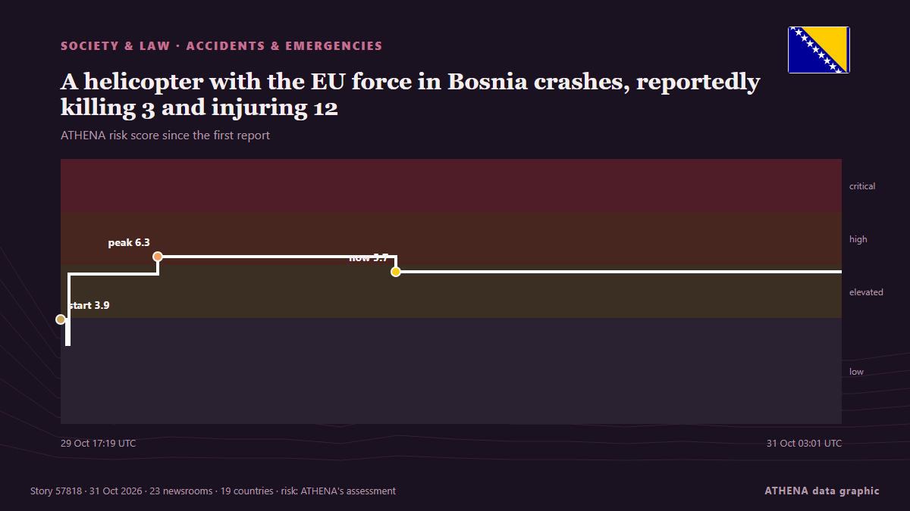

A helicopter with the EU force in Bosnia crashes, reportedly killing 3 and injuring 12

A Italian helicopter of the European Union peacekeeping force in Bosnia has crashed in the country’s north. from ABC News (International)
Reported independently by 23 outlets in 19 countries since 29 Oct, first by ANSA English; coverage is fading. ATHENA rates the risk elevated (5.7/10), driven mainly by the severity of the harm described and its geographic and sector reach. Confidence is 90% (high), with 23 independent outlets corroborating it and an average source reliability of 76%.
Why it matters: Legal and policy changes alter rights, obligations and public services for the people they reach.
What changed: 12 new reports from 8 newsrooms in the 24 hours to 31 Oct.
First reported as: Italian military helicopter crashes in Bosnia, 3 reported dead
At a glance
Selected, scored and written by ATHENA's published methodology. No editor intervenes in individual events. How this is produced ›
| 29 Oct 17:07 UTC | 15 |
|---|---|
| 29 Oct 19:07 UTC | 3 |
| 29 Oct 21:07 UTC | 1 |
| 29 Oct 23:07 UTC | 3 |
| 30 Oct 01:07 UTC | 2 |
| 30 Oct 03:07 UTC | 2 |
| 30 Oct 05:07 UTC | 0 |
| 30 Oct 07:07 UTC | 4 |
| 30 Oct 09:07 UTC | 2 |
| 30 Oct 11:07 UTC | 1 |
| 30 Oct 13:07 UTC | 1 |
| 30 Oct 15:07 UTC | 0 |
| 30 Oct 17:07 UTC | 1 |
| 30 Oct 19:07 UTC | 0 |
| 30 Oct 21:07 UTC | 0 |
| 30 Oct 23:07 UTC | 0 |
| 31 Oct 01:07 UTC | 1 |
| 29 Oct 17:19 UTC | 3.9 |
|---|---|
| 29 Oct 17:35 UTC | 3.0 |
| 29 Oct 17:40 UTC | 5.7 |
| 29 Oct 21:31 UTC | 6.3 |
| 30 Oct 07:46 UTC | 5.7 |
| 31 Oct 03:01 UTC | 5.7 |
Why these numbers
Importance
Risk
Confidence
The reporting — who reported it, and when
headline as published · opens the original- ANSA English · ItalyItalian military helicopter crashes in Bosnia
- ANSA English · ItalyItalian military helicopter crashes in Bosnia
- TASS (English) · RussiaThree people killed in EUFOR helicopter crash in Bosnia and Herzegovina
- APA (English) · AzerbaijanAt least ‘three killed’ as EUFOR helicopter crashes in Bosnia and Herzegovina
- The Straits Times · SingaporeAt least four killed as Italian helicopter on EU peacekeeping mission crashes in Bosnia
- ANSA English · ItalyItalian military helicopter crashes in Bosnia, 3 feared dead
- ANSA English · ItalyItalian military helicopter crashes in Bosnia, 3 feared dead
- ANSA English · ItalyItalian military helicopter crashes in Bosnia, 3 reported dead
- ANSA English · ItalyItalian military helicopter crashes in Bosnia, 3 reported dead
- Anadolu Agency (English) · TurkeyEUFOR helicopter crashes in Bosnia, killing 3, injuring 12
- ANSA English · Italy3 reported dead in Italian military helicopter crash in Bosnia
- ANSA English · Italy3 reported dead in Italian military helicopter crash in Bosnia
- Türkiye Today · TurkeyThree reported dead as Italian EU force helicopter goes down in Bosnia
- Times of India · India4 killed, 11 injured as Italian Chinook helicopter crashes in Bosnia
- ABC News (International) · United StatesA helicopter with the EU force in Bosnia crashes, reportedly killing 3 and injuring 12
- The Independent · United KingdomFour dead as Italian military helicopter crashes during EU mission in Bosnia
- Cyprus Mail · CyprusAt least four killed as Italian helicopter in EU mission in Bosnia crashes
- RTÉ News · IrelandEU force helicopter crash in Bosnia kills four crew
- New Straits Times · Malaysia4 killed, 11 injured as helicopter with EU force crashes in Bosnia
- The Jerusalem Post · IsraelAt least four killed, 11 injured after Italian helicopter crashes during EU mission in Bosnia
- Gulf News · United Arab EmiratesEU force helicopter crash in Bosnia kills four Italians
- Al Jazeera English · QatarEU force helicopter crash kills four in Bosnia
- NDTV · India4 EU Force Members Killed As Peacekeeping Helicopter Crashes In Bosnia
- Ada Derana · Sri LankaA helicopter with the EU force in Bosnia crashes, killing 4 and injuring 11
- FBC News · FijiFour killed in crash of Italian helicopter on EU mission in Bosnia
- Express Tribune · PakistanFour killed, 11 injured in Italian military helicopter crash in Bosnia, Herzegovina
- AzerNews · AzerbaijanFour Italian military personnel killed in helicopter crash in Bosnia and Herzegovina
- Anadolu Agency (English) · Turkey4 killed, 11 injured in Italian military helicopter crash in Bosnia and Herzegovina
- ANSA English · ItalyFour victims of Italian helicopter crash in Bosnia named
- ANSA English · ItalyFour victims of Italian helicopter crash in Bosnia named
- ANSA English · ItalyMeloni pays tribute to victims of Italian military helicopter crash in Bosnia
- ANSA English · ItalyMeloni pays tribute to victims of Italian military helicopter crash in Bosnia
- Euractiv · BelgiumEU mourns four Italians killed in EUFOR Bosnia mission crash
- News of Bahrain · BahrainBosnia Declares Day of Mourning After Deadly EUFOR Helicopter Crash
- Anadolu Agency (English) · TurkeyTürkiye extends condolences after Italian military helicopter crash in Bosnia
- Free Malaysia Today · MalaysiaUN Security Council renews Bosnia peacekeeping force